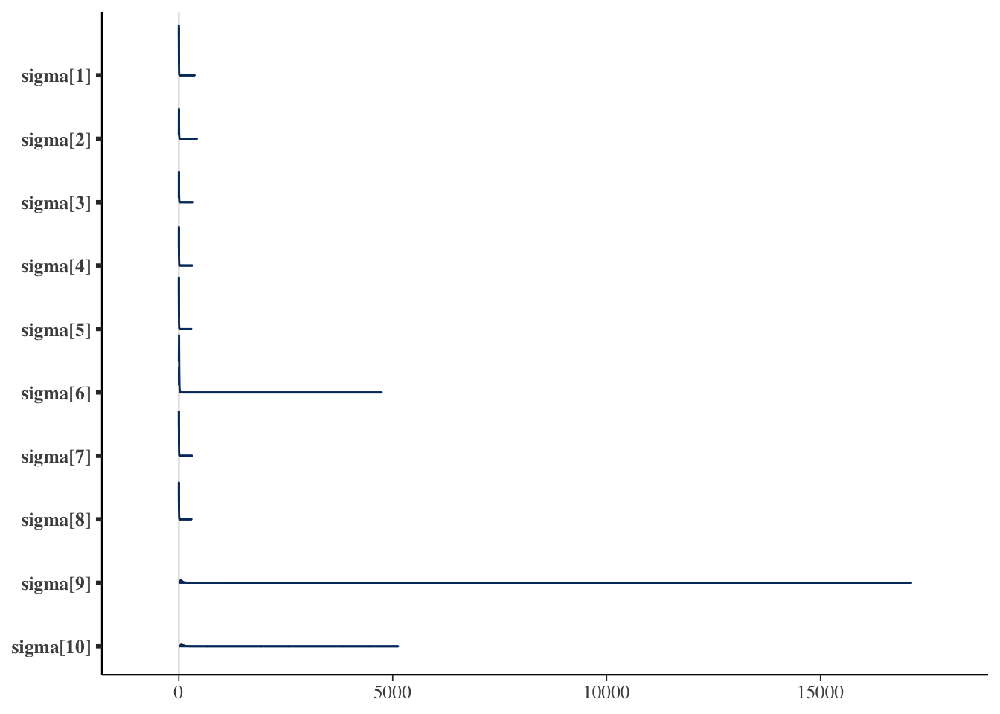
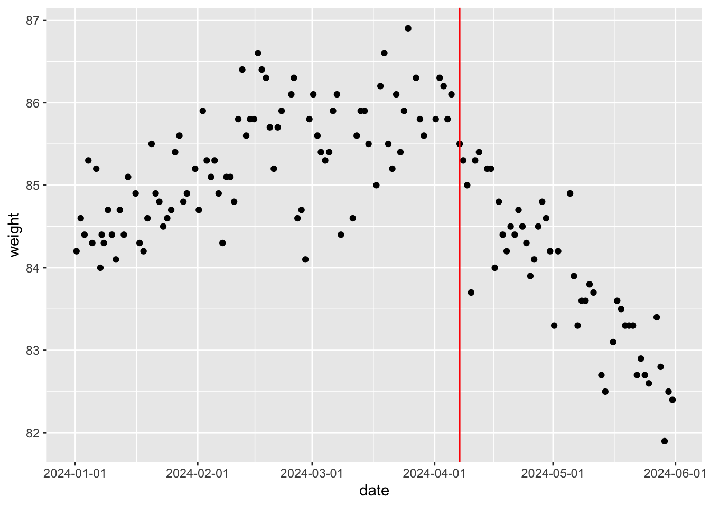
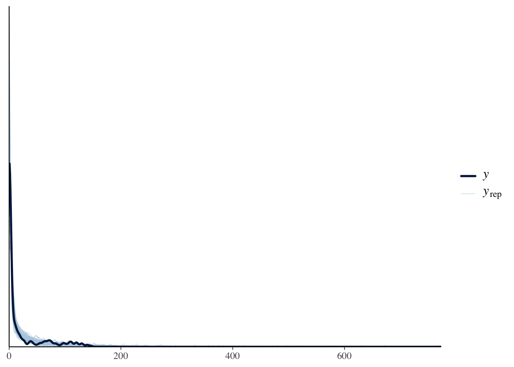

y <- c(151, 149, 152, 150, 151, 148, 151, 150, 221, 245)16 ベイジアンモデリング
ここまでは定型的な統計モデルをいろいろ紹介してきた。定型的といったのは，モデルの形や求めるパラメータの数，その解釈の仕方が決まっていて，データの種類や型に合えば適用できるモデルという意味である。これに対してベイジアンモデリングは，データに合う形のモデルを形作る＝モデリングするということであり，その推定方法としてベイズ法をつかうというものである。推定法は必ずしもベイズ法である必要はなく，最尤法でも最小二乗法でも良いのだが，これらの手法による推定は推定手順も自らで開発しなければならない。これに対し，すでにみた確率的プログラミング言語によるベイズ推定は，確率モデルさえ記述できれば推定結果が得られる。これにより，研究者は自らのデータとその背景に合ったモデルを考えて記述するだけでよく，テクニカルな推定手順を考える必要がなくなる。確率的プログラミング言語は，その言葉にあるようにプログラミングの知識を必要とするが，逆に言えばこの知識・技能さえ習得しておけば，あとは分析者のアイデア次第で、自身のオリジナルな分析ができる。
以下ではStanによるプログラミングと，その特徴的な利用例についてみていくが，その前にベイジアンモデリングを学ぶ上での指針を示しておく。
16.1 ベイジアンモデリングの学習方法
16.1.1 学習のステップ1;確率的プログラミング言語Stanの学習
ここではRを使った統計分析を扱ってきたので，改めてプログラミングとは，という話をする必要はないだろう。ただ，確率的プログラミング言語としてここで取り上げるStanは，Rよりもやや上級者向けの，C++と呼ばれる言語に基づいたものである。初学者にとって大きな違いは，「インタプリタ型とコンパイル型」，および「型宣言」の2点だろう。
16.1.1.1 インタプリタ型とコンパイル型
Rはインタプリタ型言語と呼ばれる。個人的には「一問一答型」と呼んでいる。コマンドプロンプト>が表示されている時，Rは入力を待って聞き耳を立てているのであった。ここに計算式や命令文を入れると，結果を計算して返す。つまり，問いに対して答えが返ってくる，という形式の繰り返しである。
これに対してコンパイル型言語というのがある。C言語やJava，Python，そしてStanはこの形である。すなわち，命令文全体をまず書いて，その文書(スクリプトファイル)全体を機械語に翻訳する。この作業をコンパイルという。コンパイルされたものを実行すると，その文書の内容が実行される。ここで命令文に誤りがある場合，1.コンパイルできないというエラーが表示される，2.コンパイルはできるが，実行時にエラーが表示される，という2つのケースがある。エラーは大抵，XX行目がおかしい，という形で表示される。インタプリタ型であれば，書いて実行した行でエラーだと言われるので気づきやすいが，コンパイル型は一旦書き切ってからでないとエラーかどうかわからないので1，不便に感じるかもしれない。
コンパイル型の利点は，一旦機械語に翻訳し，計算機は計算機自身の母語(機械語)で計算をするので，計算速度が速いという点にある。この利点のために必要なこととして理解して欲しい。また，コンパイルは専用のツールを使い，そのツールによってコンパイルされたものは，そのツールの環境でしか動かないという制約がある。Windowsの場合はRtools，Macの場合はcommand line toolsを導入する必要がある。これらは計算機のより根源的なところにアクセスする。一般的なアプリケーションを使うのとは違い，むしろMCMCサンプリングを行うアプリケーションを作るようなものだから，ウィルス対策ソフトがその実行を妨げるようなことがある。環境の構築はすでに済んでいるものとして話を進めるが，その準備に一苦労する可能性があることは覚えておくと良い。困ったことがあれば，自身で検索するなどして対応する必要があるだろう。
さて，Stanを使った分析では，Rファイルとは別に命令文全体をStanの言語で書いたStanファイルを準備することになる。このファイルをRの命令文で「Stanを使ってコンパイルせよ」と指示する。コンパイルが終われば，これまたR側から，「そのコンパイルされたオブジェクトを使ってMCMCサンプリングをせよ」と指示する。計算結果はRのオブジェクトとして環境に保存されるから，あとはRによるデータハンドリングの作業になってくる。StanファイルもRファイルもRStudioのエディタ機能を利用すれば良いが，両者を混ぜるようなことのないよう，この仕組みを理解して進めてほしい。
16.1.1.2 型宣言
聞きなれない言葉かもしれないが，型宣言とは，変数の型を宣言することである。例えば，int x;というコードがあったとき，intは整数型を表している。整数型は整数であり，xに代入可能なのは1.0(実数)でも1+0i(複素数)でもなく，1(整数)である。
このように，変数を使う前にその変数がどの型なのかを宣言することを型宣言という。このような型宣言は，コンパイル型言語では必須である。このように宣言しておくことで，本来整数しか入らないところに実数を入れてしまう，といったエラーが生じないように工夫されている。Rでは変数を事前に宣言する必要がなく，ただx <- 1と書き始めると，xが整数であれ実数であれ，自由に扱うことができた。このことに慣れていると，事前に宣言しなければならないことが非常に不便に思えるかもしれないが，型宣言をすることで言語の堅牢性を高めているという利点がある。
Stanはこの型宣言をブロックごとに行う必要がある。ブロックとは，中括弧{}で囲われる領域のことであり，次の6つのブロックがある。
- dataブロック
- transformed dataブロック
- parametersブロック
- transformed parametersブロック
- modelブロック
- generated quantitiesブロック
もっともよく使われるのは1.dataブロックと，3.parametersブロック，5.modelブロックである。dataブロックはStan外部とのやりとり，すなわちStanが外部から受け取るデータを宣言，記述するところである。ここで型が異なるデータが与えられるとエラーになる。すなわち，Stanの側でint x;と宣言してあるのに対し，R側からx <- 1.2のような実数が与えられると，実行時にエラーになる。このように，型宣言をすることで，エラーを防ぐものであると理解してほしい。
parametersブロックは推定したいパラメータを宣言するものであり，ここで宣言されたパラメータについて，Stanはサンプリング結果を返すことになる。modelブロックは確率モデルを記述するところ(尤度関数を記述するところ)であるので，もっとも重要なブロックであると言えるだろう。
そのほかのブロックは捕捉的なものであり，必ずしも使う必要があるわけではない。transformed dataブロックは，dataブロックで宣言されたデータを変換するところであり，transformed parametersブロックは，parametersブロックで宣言されたパラメータを変換するところである。なぜそのような変換をするかといえば，内部で以後の計算をやりやすくするためである。例えば複数のパラメータを組み合わせて，確率分布に与える場合は一旦返還しておいた方が可読性が高い。具体例として回帰分析のことを考えると，パラメータは切片\(\beta_0\)と傾き\(\beta_1\)であり，これが説明変数\(x_i\)と組み合わさって予測値\(\hat{y}_i\)を作るのであった。パラメータブロックには\(\beta_0\)と\(\beta_1\)を宣言するが，transformed parametersブロックでyhatを宣言して
\[ yhat = \beta_0 + \beta_1 x\]
とかいておくと，モデルブロックではyhatを使って記述できる。このように，あるパラメータがほかのパラメータの組み合わせで作られる場合などは，一旦その置き換えられる形を書いておいた方がわかりやすだろう。
generated quantitiesブロックは，サンプリングされた値を加工して使う場合に用いる。サンプリングされたものの加工は，結果を受け取ったRの側でも可能なので，このブロックは必ずしも必要ではない。しかし，サンプリングが終わった時に自分に必要な加工された値も(コンパイルして高速で)計算しておいてくれると便利である。他にも色々な用途があるので，このブロックに関しては続く実践例のところでみていこう。
16.1.1.3 そのほかの細かな違い
あとは，行の終わりにセミコロンをつける必要があるとか，コメントを書くときに//を使うとか，そういった細かなところが違うだけである。
プログラミングの基本は思った通りに動くのではなく，書いた通りに動くことである。もし思い通りにいかず，エラーが表示されれば，それもあなたが書いたコードに原因がある2。そのためエラーがでたら恐れ慄くのではなく，解決のためのヒントが表示されたぐらいに理解すれば良い。問題点を一つ一つ解決していけば，必ず望むところに到達できるはずである。最近は生成AIが発達しているので，エラーメッセージを丸ごと生成AIに与えて，どこにどのような問題があるかを聞くという方法があるので，それを利用すると良い。
16.1.2 学習のステップ2;これまでの分析方法を書き直してみる
ここまで様々な統計モデルを見てきた。ベイジアンモデリングの学習のステップ2は，これまでの分析方法をStanに書き直してみることである。
例えば回帰分析を，重回帰分析を，階層線形モデルをStanの言葉で書いたらどうなるだろうか。もちろんbrmsパッケージを使うとこうした苦労は必要ないのだが，改めて自分で既知のモデルを描いてみると，どのようなモデルがどのように記述されるかがわかるだろう。
この時のポイントは，分析に際してデータ生成メカニズムという視点を持つことである。我々はつい，データがあってそれに合う分析方法を探す，という発想になってしまう。あるいは分析方法のバリエーションがないばあい，分析方法に合うようなデータを取る，という考え方になってしまう。これはおかしなことだとは思わないだろうか。自分の購入した統計ソフトが回帰分析しかできないので，離散変数は諦めて研究計画を練り直そう，というのは大変貧しい話である。
本来，自然な人間の振る舞いや反応の仕方を数値におとして，そこから意味を読み取ることが統計学であり，予算や環境の問題で人間の振る舞いの方を変えさせるというのはおかしいのである。なるべくデータは生のままで，これをどのように分析するかを考えるべきである。その時，「このデータはどのようなメカニズムで生まれてきたのか」という視点からアプローチする。ここでのメカニズムは確率分布と言い換えても良いかもしれない。すなわち，個々の反応は確定した一つの値しか取らないわけがないので，その反応のあり得るほかの値をかんがえ，その総覧を確率分布として表現するのである。その上で，その確率分布が持つパラメータが，どのような仕組みを持っているかを数式で記述する。
回帰分析は，個々の値\(y_i\)が，本来取りうる値\(\hat{y}_i\)に誤差\(e_i\)がついて生じた，と考えている。この誤差は正規分布に従うから，\(y_i \sim N(\hat{y}_i, \sigma^2)\)と記述される。この\(\hat{y}_i\)は説明変数\(x_i\)の線形結合で表現されるから，\(y_i \sim N(\beta_0 + \beta_1 x_i, \sigma^2)\)とする，といった具合である。
回帰分析がこのようなメカニズムであったように，t検定や分散分析なども同様に記述することができる。こうした既存のモデルを改めて記述すると，これまで意識していなかったモデルの性質が見えてくる。例えば，確率分布として何を仮定していたのか，パラメータの制約として何をおいていたのか，事前分布として何を考えていたのか，といったことが，Stanの言語で逐一記述することでわかるようになる。これが，既存のモデルをStanの言語で書き直すことによる学習の利点である。
- 様々なモデルを試してみる
既存のモデルが確率的プログラミング言語で表現できることがわかれば，つぎは確率的プログラミング言語でないと表現できないことに目を向けてみよう。
例えばt検定や分散分析は「平均値の差の検定」である。ここで行われていたことは，正規分布に従うデータの，平均値の差があるかどうか，全ての群間に差がないと言って間違える可能性はどれぐらいあるか，ということであった。データ生成メカニズムの観点から見ると，この手法はごく限定的な一部分しか見ていなかったことに気づく。
平均値以外のパラメータを考えることはできないのだろうか。特定の群間の差だけを考えることはできないのだろうか。差があるかないかだけではなく，どれぐらい差があるのかとか，一方が他方より大きい確率はどれぐらいか，といったことを考えることはできないのだろうか。
これらの疑問に対して，ベイジアンモデリングは答えを与える。実験計画法によって得られたデータであっても，これまで以上に多角的な視点，様々な仮説を持って考えることができる。
もちろん実験計画法による要因効果の特定だけがベイジアンモデリングではない。正規分布ではないデータに対しても，特定の離散的な区別をしていないデータに対しても，データ生成の観点からモデルを組み込んでいくことができる。以下ではこうした例をいくつか見ていくが，これらを見ることで統計分析の視点が一変することを感じてほしい。統計分析は，与えられたデータに既存の分析を制約の中で考えるのではなく，データの生成メカニズムをクリエイティブに考える楽しい営みなのである。
- 限界について知っておこう
ベイジアンモデリングの自由さ，創造性に目覚めてしばらくすると，その限界に気づくこともあるだろう。まずは楽しんでいってほしいというところだが，先にどのような壁に直面しがちなのか，みておこう。
一つはモデル評価の問題である。例えば帰無仮説検定の場合，これは評価・判断をするための技術であるから，「設定した有意水準を下回る\(p\)値を得れば差があると言って良い」といった評価基準が明確であった。これに対して，ベイジアンモデリングを行うと，こうした「YesかNoか」といった答えは出しにくい。帰無仮説と対立仮説というモデル，あるいは自分が開発したモデルが既存のモデルに比べて，良いのか悪いのかといった判断基準をどう持てば良いのか。
これについての答えは明確で，ベイズファクター(Bayes Factor)をみよ，というのがそれである。ベイズ的モデル評価はこのBFに一元化できるといっても過言ではない。BFはモデルとデータの当てはまりの良さを，モデル同士の相対比較で表現するものであるから，対立仮説よりも帰無仮説のほうが良い，という結論を出すこともできる。ただし，この「当てはまりのよさ」(周辺対数尤度)を計算するプロセスが少し複雑で，またモデルによっては解析的に計算できず推定するしかないこともある3。この点については，今後の計算機科学の発展が望まれる。
t検定や分散分析など，定型的なモデルについてはBFを自動的に算出してくれるパッケージやアプリケーションがある。JASP(JASP Team 2025)はその代表的なもので，GUIを備えた統計ソフトウェアでありながら，既存の分析結果と同時にベイズ推定の結果も出力し，BFも自動的に計算してくれる。
ただし，BFも「3.0より大きければ優っていると判断して良い」という数値基準もあるが，こうした「YesかNoか！」という二値判断が，過大な解釈を許したり基準を超えるための不正を生んだりしてきたという歴史を鑑みると，使い方には注意が必要である。またBFは事前分布の置き方によっては同じモデルでも大きく値を変えることが知られており，客観的な事前分布の置き方については様々な議論がある。
BFを離れてモデルを評価するのであれば，得られた事後分布やパラメータを見て色々判断するしかないだろう。Kruschke (2018) は事前に判断するパラメータの領域を宣言しておく方法を考えているし，豊田 (2020) は事後分布の関数の形で判断する方法を提示したりしている。これらは帰無仮説検定に対する代案として提示されているものである。今後どのような形で議論が進むのか，まだ確定していないというのが現状である。
モデルの評価はBFでできるとして，次に初学者が直面する問題は，「自分でモデルを作るのが難しい」というものである。以下に続く様々なモデルはどれも魅力的であるが，自分では思いつかないよ，と思って挫けそうになるという相談をよく耳にすることがある。これについては特効薬があるわけではないが，そもそもゼロから全てのモデルを作り上げよう，とするのが大きすぎる野望のように思われる。まずは色々なモデルを知って，このモデルを自分のデータにはこのように応用できそうだ，と想像力を働かせるところから進めよう。あるいは非常に限定的な，小さなおもちゃのようなモデル(Toyモデル)を作って，それを徐々に発展させていくことで大きなモデルに育てる，という観点を持つことである。浜田 (2018) や 浜田 (2020) を読むと，このステップの重要さがよくわかるだろう。
そもそも，線形モデルでも十分なシーンというのも結構あるものである。ベイジアンモデリングで自分似合ったデータをカスタマイズする，と豪語しておいた後で言うのもおかしいが，はっきりした傾向があるのであれば線形モデルで大体うまくいく。線形モデルはピッタリとは言わないが大体当てはまっていて理解できるモデルであり，モデリングは細かな違いに当てはめていこうとする「作り込み」の技術であるから，実践的にはそこまで必要のないことも少なくない。もちろん線形モデルといってもただの単回帰分析で良い，といってるのではなく，データの生成メカニズムにあった一般化線形モデル，混合モデルなど工夫できるところは色々あるのだから。
こうした問題やぶつかりそうな壁があると知ってもなお，ベイジアンモデリングはおすすめできる。この自由で創造的な世界を知らずして，統計分析が苦手だと思ってしまうのは非常にもったいないからである。以下の用例で，ベイジアンモデリングの様々な可能性を味わっていただきたい。
16.2 正規分布を使ったモデル
まずはこれまでもよく用いられてきた，正規分布を使ったモデルについて見てみよう。
16.2.1 分散を推定する
正規分布を使ったモデルといえば，一般線形モデルのような平均値に関するモデルがほとんどである。正規分布は位置パラメータ\(\mu\)と，スケールパラメータすなわち幅のパラメータ\(\sigma\)でその形状が定まるが4，後者はブレの大きさ，誤差の大きさに関するものと考えられるから，そうした指標としてモデルを考えてみよう。
カバーストーリーとして次のようなシーンを考える5。 ある牛丼チェーン店では，並盛り一人前につき150gの肉を載せて提供すること，という決まりになっている。ここである店舗で社員による抜き打ち検査があり，提供係10名に牛丼を作らせ，その肉の量を計測した。10名のうち2名はまだ日の浅いアルバイトであることがわかっている。計測した肉の量は以下の通りであった。
ここから次のようなモデルを考えよう。全員平均\(\mu=150\)のつもりで提供しているが，誤差が個人ごとに異なるものとする。これを数式で次のように表現する。
\[ y_i \sim N(\mu, \sigma_i) \]
添字を注意深く見るとわかるが，個人を識別する\(i\)がデータ\(y_i\)と標準偏差\(\sigma_i\)についていて，平均値\(\mu\)にはついていない。つまり平均値は全員で共通していると仮定し，そこからのブレが個人ごとに違うというモデルになっている。
これがデータ\(y_i\)を生成するデータ生成メカニズムである。ここでの未知数\(\mu,\sigma_i\)をデータから推測するために，StanによるMCMC法を用いる。Stanのコードは次のようになる。このコードを，例えばgyudon10.stanとでも名前をつけて保存しておこう。
data{
int N;
array[N] real Y;
}
parameters{
real mu;
array[N] real<lower=0> sigma;
}
model{
// likelihood
for(i in 1:N){
Y[i] ~ normal(mu, sigma[i]);
}
// prior
mu ~ uniform(0, 200);
sigma ~ cauchy(0,5);
}コードがdataとparameters，modelの3つのブロックに分かれていることに注意してほしい。また，各ブロックでintやarrayなどの型宣言があることに注意してほしい。
まずはdataブロックを見よう。intは整数型で，まずデータのサイズを外部から入力するようにしている。これで，例えばデータが7件とか50件と変わった時でも同じコードが使えるようにしている。またarrayは配列の型宣言であり，同じ変数名で複数の値が入るようになっている。ここではN人分のデータを扱うためにarray[N] real Y;というように宣言している。
続くparamtersブロックでは，知りたい未知数の\(\mu\)と\(\sigma_i\)をそれぞれreal mu;とarray[N] real<lower=0> sigma;としている。realは実数型，arrayはすでに述べたように配列で，\(\sigma_i\)の\(i\)によって異なる\(\sigma\)である様を表現している。<lower=0>としているのは変数に対する制約で，この\(\sigma_i\)は下限が\(0\)，すなわち正の数しかとらないことにしている。分散は負になることがないので，こうしておくとStanがMCMCサンプリングにおいて可能な値の候補を探す領域が適切に制限されることになる。
最後のmodelブロックは，確率モデルを記述する。ベイズ的確率モデルは尤度と事前分布が必要で，まず尤度を記述している。 Y[i] ~ normal(mu, sigma[i])のところがそれで，\(i\)がfor文によって繰り返されている。数式で言えば，次の計算と同じである。
\[ \prod_{i=1}^{N} N(Y_i | \mu, \sigma_i) \]
実際の計算は対数尤度をとって，次の計算を行っているが，Stanでは「データが次の確率分布に従う」という形で書けるので，確率分布を使ったモデルさえかければ誰でも推定ができる。
\[ \sum _{i=1}^{N} \log\{N(Y_i | \mu, \sigma_i)\} \]
また今回はそれぞれの事前分布として，\(\mu\)に\(0\)から\(200\)までの一様分布を，\(\sigma\)にコーシー分布を置いた。どのような事前分布をおくかは自由だし，特段指定がなければStanは十分にひろい一様分布を自動的に設定する。分散(標準偏差)パラメータの事前分布には裾の重い分布をおくことが一般的で，コーシー分布やStudentのt分布，指数分布などがよく用いられる。
さてこのコードを，次のRコードから呼び出して実行する。手順は(必要なライブラリを読み込んだ上で)，stanファイルをコンパイルし，できたオブジェクトにサンプリングの設定を与えて出力する，というものである。
サンプリングに際してはデータを外部から与える必要があるため，dataSetオブジェクトを作って渡すようにした。与えるデータはリスト型であり，stanファイル側のdataブロックと同じ変数名をつける必要がある。サンプリングのその他の設定は次のとおりである。
data…データを与えるchains…MCMCチェインを走らせる数parallel_chains…MCMCチェインのうち，並列で走らせるチェインの数。実行環境のCPUが持っているコア数-1程度にするのが良い。iter_warmup…サンプリングに入る前の調整期間。詳しくは@sec-mcmc-evaluation を参照iter_sampling…サンプリングの数。詳しくは@sec-mcmc-evaluation を参照reflesh…サンプリングの途中経過をどの程度の頻度で出力するかの設定。必ずしも設定しなくとも良い。
pacman::p_load(cmdstanr)
model <- cmdstan_model("gyudon10.stan")
dataSet <- list(
N = length(y),
Y = y
)
fit <- model$sample(
data = dataSet,
chains = 4,
parallel_chains = 4,
iter_warmup = 2000,
iter_sampling = 5000,
refresh = 0
)Running MCMC with 4 parallel chains...Chain 3 finished in 0.1 seconds.
Chain 2 finished in 0.2 seconds.
Chain 4 finished in 0.2 seconds.
Chain 1 finished in 0.3 seconds.
All 4 chains finished successfully.
Mean chain execution time: 0.2 seconds.
Total execution time: 0.4 seconds.print(fit) variable mean median sd mad q5 q95 rhat ess_bulk ess_tail
lp__ -18.64 -18.34 2.26 2.10 -22.87 -15.61 1.00 3156 3212
mu 150.61 150.81 0.64 0.47 149.46 151.41 1.00 2944 6131
sigma[1] 2.85 1.32 6.59 1.55 0.06 9.41 1.01 325 134
sigma[2] 4.72 2.99 8.06 2.30 0.77 13.08 1.00 2307 6369
sigma[3] 4.59 2.84 7.41 2.34 0.70 12.97 1.00 1048 1073
sigma[4] 3.40 1.88 5.90 1.79 0.23 10.83 1.00 2184 2983
sigma[5] 2.70 1.32 5.60 1.53 0.06 8.95 1.01 286 84
sigma[6] 7.29 4.06 61.35 2.75 1.39 17.41 1.00 1815 1718
sigma[7] 2.97 1.53 6.40 1.62 0.10 9.85 1.00 1161 389
sigma[8] 3.62 1.99 6.32 1.94 0.21 12.29 1.01 596 134
# showing 10 of 12 rows (change via 'max_rows' argument or 'cmdstanr_max_rows' option)結果を見ると，\(\mu\)は平均して150程度であり，店舗マニュアルに沿った結果が出ているといえよう。注目すべきは個々人の誤差であり，可視化してみるとその特徴がわかりやすい。
pacman::p_load(bayesplot)
draws <- fit$draws()
# sigmaパラメータのみを可視化
bayesplot::mcmc_areas(draws, regex_pars = "sigma")
これをみると明らかなように，最後の2人が大きな値であり，明らかに未熟であることがわかる。 数値で出力するために，bayestestRパッケージの力も借りてみよう。
pacman::p_load(bayestestR)
# sigmaパラメータのみを選択
sigma_draws <- draws[, , grepl("sigma", dimnames(draws)$variable)]
# EAP(平均), MAP(最頻値), 中央値, 95%HDI
bayestestR::describe_posterior(sigma_draws,
centrality = c("mean", "median", "MAP"),
ci = 0.95, ci_method = "hdi", test = NULL
)Summary of Posterior Distribution
Parameter | Median | Mean | MAP | 95% CI
-----------------------------------------------------
sigma[1] | 1.32 | 2.85 | 0.37 | [ 0.02, 9.42]
sigma[2] | 2.99 | 4.72 | 1.68 | [ 0.03, 13.08]
sigma[3] | 2.84 | 4.59 | 1.33 | [ 0.04, 13.00]
sigma[4] | 1.88 | 3.40 | 0.63 | [ 0.02, 10.83]
sigma[5] | 1.32 | 2.70 | 0.30 | [ 0.01, 8.95]
sigma[6] | 4.06 | 7.29 | 4.72 | [ 0.40, 17.50]
sigma[7] | 1.53 | 2.97 | 0.32 | [ 0.02, 9.85]
sigma[8] | 1.99 | 3.62 | 0.88 | [ 0.02, 12.30]
sigma[9] | 61.00 | 88.74 | 48.52 | [20.04, 211.82]
sigma[10] | 82.26 | 115.45 | 59.69 | [23.78, 275.61]ここにあるように，結果は確率分布の形で得られるので，平均値(Mean, EAP)でみるのか，中央値(Median)でみるのか，密度が最大になるところ(MAP)でみるのかによって大きく値が異なる。特に分散パラメータは左右対称ではなく歪んだ分布になるので，EAP推定値は適切ではない。 また，確信区間は今回HDIを指定した。HDIはHighest Density Intervalsの略で，最高密度を含む95%の領域を指す。いわゆるパーセンタイルのように，上下2.5%を除外した領域を取る方法はETI(Equal-Tailed Intervals)と呼ばれるが，これだと歪んだ分布に対してやや偏った結果になることがある。詳しくは クルシュケ ([2014] 2017) や Makowski, Ben-Shachar, and Lüdecke (2019) ，あるいは単にbayestestRのサイトを参照して欲しい。
さて，ともあれこのように幅のパラメータを推定するモデルを描くことができた。今回はたった10件の数字でもモデリングができること，平均パラメータ以外もモデリングの対象になることを確認してもらいたい。心理学において，特に反復測定を行う場合の個人の分散は，その人の持っている精度・誤差の大きさを表すと言える。今回のようにこの幅が，熟練度と解釈できるようなシーンであれば，立派に解釈可能なパラメータである。例えばこの\(\sigma_i\)に，経験日数\(z_i\)をつかって\(\sigma_i = \beta_0 + \beta_1 z_i\)のようなモデリングをすれば，どの程度経験によって誤差がなくなっていくかといった意味のある考察もできるだろう。このように，心理学において考察できるパラメータは平均だけではなく，我々は自由にその発想で考えることができるということを味わってもらいたい。
16.2.2 欠測のあるデータを有効に使う
続いては相関係数のモデリングを見てみよう。 例えば大学の入試の成績と，入学後の成績の間にはそれほど高い相関が見られない，という現象がある。 これは大学の入試が適切に学力を測定していない，という問題ではなく，いわゆる「選抜効果」とよばれるものだ。大学に入学できているのは一定のスコアを超えた者だけなので，得られたデータが本来の「入試の成績」の情報を含んでいないという問題である。
具体的に数字で見てみよう。まずある程度の相関関係を持つデータを作り，その一部を欠損させてみよう。
pacman::p_load(MASS, tidyverse)
N <- 500
mu <- c(50, 60)
sd <- c(10, 10)
rho <- 0.7
Sig <- matrix(nrow = 2, ncol = 2)
Sig[1, 1] <- sd[1] * sd[1]
Sig[1, 2] <- sd[1] * sd[2] * rho
Sig[2, 1] <- sd[2] * sd[1] * rho
Sig[2, 2] <- sd[2] * sd[2]
# 乱数の発生
set.seed(17)
X <- mvrnorm(N, mu, Sig, empirical = T)
dat <- data.frame(X)
dat$FLG <- factor(ifelse(dat$X1 > 60, 1, 2), labels = c("pass", "fail"))
# 描画
g <- ggplot(dat, aes(x = X1, y = X2, group = FLG, color = FLG)) +
geom_point()
g
ここでは60点以上の者が入学したとして切断してみた。この場合の相関係数を，欠測値を除くuse=complete.obsのオプションをつけて確認しておく。
# フルデータの場合
cor(dat$X1, dat$X2)[1] 0.7# 欠測値に置き換える
dat[dat$FLG == "fail", ]$X2 <- NA
# 改めて相関係数を算出
cor(dat$X1, dat$X2, use = "complete.obs")[1] 0.4284751不合格者が欠測値だとすると，相関係数は0.428にまで落ちてしまった。
さてこれをベイジアンモデリングでできるだけ補正してみよう。コードは次のようなものになる。
data{
int<lower=0> Nobs;
int<lower=0> Nmiss;
array[Nobs] vector[2] obsX;
array[Nmiss] real missX;
}
parameters{
vector[2] mu;
real<lower=0> sd1;
real<lower=0> sd2;
real<lower=-1,upper=1> rho;
}
transformed parameters{
cov_matrix[2] Sig;
Sig[1,1] = sd1 * sd1;
Sig[1,2] = sd1 * sd2 * rho;
Sig[2,1] = Sig[1,2];
Sig[2,2] = sd2 * sd2;
}
model{
//likelihood
obsX ~ multi_normal(mu, Sig);
missX ~ normal(mu[1], sd1);
//prior
mu[1] ~ uniform(0,100);
mu[2] ~ uniform(0,100);
sd1 ~ cauchy(0,5);
sd2 ~ cauchy(0,5);
rho ~ uniform(-1,1);
}このコードでは，まずデータブロックでNobsとNmissという二つの整数値をとっている。これは2つの変数が両方とも観測されたケースの数と，一方が欠測値であったケースの数である。StanではNAを直接扱うことができず，有効なデータの数だけ渡す必要があり，冒頭にその数を明示しておいた。
次にvector型でobsX[Nobs]を宣言している。vector[2]とあるのは2つの要素を持つベクトルで1セットの変数であることを意味し，それがNobs個あることを表している。最後に，一方の変数が欠落していたデータも活用するために，Nmiss個の配列変数を用意した。こちらはベクトルではなく，サイズをしていした実数の配列の扱いである。
今回推定したいのは相関係数rhoだが，これは2次元の多変量正規分布を想定した時の分散共分散行列の中に現れる。尤度のところにあるように，平均ベクトル\(\mathbb{\mu}\)と，分散共分散行列\(\mathbb{\Sigma}\)からデータは生成されている。
\[ obsX \sim MN(\mathbb{\mu},\mathbb{\Sigma})\]
ここで分散共分散行列の要素を紐解くと， \[ \mathbb{\Sigma} = \begin{pmatrix} \sigma_1^2 & \sigma_{12}\\ \sigma_{21} & \sigma_2^2 \end{pmatrix} = \begin{pmatrix} \sigma_1^2 & \sigma_1 \sigma_2 \rho \\ \sigma_1 \sigma_2 \rho & \sigma_2^2 \end{pmatrix}\]
となる。ここで\(\sigma_1, \sigma_2\)はそれぞれの変数の標準偏差であり，\(\rho\)は相関係数である。
parametersブロックでは，この\(\sigma_1,\sigma_2,\rho\)を宣言しておき，これをtransformed parametersブロックで分散共分散行列に書き直している。なおcov_matrix型はStanのもつ分散共分散行列専用の型である。
modelブロックも注意深くみて欲しい。まず2つの変数が揃っているobsXは多変量正規分布から生成されている。そして1つの変数が欠如しているmissXも，X1側のデータは残っているので，これをいわゆる普通の(単変量の)正規分布から生成されたものとしている。mu[1]とsd1の尤度を追加することで補正を試みているのだ。
平均値の事前分布には，テストなので0点から100点の間のどこかにあるから，uniform(0,1)を置いた。標準偏差の事前分布には裾の重いコーシー分布を，相関係数の事前分布には，Stanがもつ相関係数用の分布であるlkj_corrを置いた。これのパラメータが1であれば，相関係数に適した無情報分布を置いたことと同義である。
さて，このモデルをコンパイルし，データを与えてrhoがどうなるかみてみよう。 データの与え方に注意して欲しい。
model <- cmdstan_model("missing_corr.stan")
dataSet <- list(
Nobs = sum(!is.na(dat$X2)),
Nmiss = NROW(dat$X1) - sum(!is.na(dat$X2)),
obsX = dat[!is.na(dat$X2), c(1, 2)],
missX = dat[is.na(dat$X2), 1]
)
fit <- model$sample(
data = dataSet,
chains = 4,
parallel_chains = 4,
refresh = 0
)Running MCMC with 4 parallel chains...Chain 3 finished in 0.7 seconds.
Chain 4 finished in 0.6 seconds.
Chain 1 finished in 0.7 seconds.
Chain 2 finished in 0.7 seconds.
All 4 chains finished successfully.
Mean chain execution time: 0.7 seconds.
Total execution time: 0.8 seconds.bayestestR::describe_posterior(fit$draws("rho"),
centrality = c("mean", "median", "MAP"), ci = 0.95, ci_method = "hdi", test = NULL
)Summary of Posterior Distribution
Parameter | Median | Mean | MAP | 95% CI
-----------------------------------------------
rho | 0.73 | 0.71 | 0.76 | [0.50, 0.88]今回推定されたrhoは0.711と，ほぼ理論通りの値を復元できている。 多変量正規分布は，各変数に限って見てみると一変数の正規分布と同じであり，今回欠測のないX1の情報を尤度に追加することで，持ちうるデータの情報全てを活用することができた。このように，得られたデータが限定的であってもそのデータ生成メカニズムを考えることで補正できることは少なくない。たとえば上限や下限の値が決まっているデータに対し，そうした打ち切りがなければ本当は何点だったのか，といったこともモデルの工夫で推定することができるようになる。6
16.3 正規分布以外の分布を使う
ベイジアンモデリングは，確率分布のパラメータに数式的構造を仮定することでもある。ここでは正規分布以外の確率分布を使った例を見てみよう。 ### 項目反応理論 すでに Section 14.3 で見たように，項目反応理論はまさに正規分布以外のパラメータに数式的構造を持たせたものであった。すなわち，結果変数が0/1のバイナリデータであるから，確率分布としてはベルヌーイ分布を用い，パラメータ\(\theta\)は1が出る確率(正答する確率)と考えられるから，この\(\theta\)に潜在的な学力を仮定したロジスティックモデルを入れるのであった。
この観点で数式を書き表すと，ある項目\(j\)に個人\(i\)が回答したパターン\(Y_{ij}\)は次のように表現できる。
\[ Y_{ij} \sim Bernoulli(p_i) \] \[ p_i = \frac{1}{1+\exp(-a_j(\theta_i - b_j))} \]
これをStanによるモデルで実装してみよう。コードは次のようになる。
data{
int<lower=0> L; // data length
int<lower=0> N; // number of persons
int<lower=0> M; // number of questions
array[L] int<lower=0> Pid; // personal ID
array[L] int<lower=0> Qid; // question ID
array[L] int<lower=0,upper=1> resp; // response
}
parameters{
array[M] real<lower=0> a;
array[M] real<lower=-5,upper=5> b;
array[N] real theta;
}
model{
//likelihood
for(l in 1:L){
resp[l] ~ bernoulli_logit(1.7*a[Qid[l]]*(theta[Pid[l]]-b[Qid[l]]));
}
//prior
a ~ lognormal(0,sqrt(0.5));
b ~ normal(0,3);
theta ~ normal(0,1);
}ここではデータがLong型の整然データになっていることが前提である。すなわち，一行には受験者ID，項目番号(項目ID)と正答誤答の反応が入った3列のデータである。
これを受けてdataブロックでは，まずデータ全体の長さLと，受験者数N，項目数Mの値を整数型で受け取り，これらの数字に応じた配列の変数を用意している。受験者のIDはPid，項目のIDはQid，反応はrespであり，それぞれ長さLの配列である。受け取る数値の範囲にも注意してもらいたい。
parametersブロックでは，項目パラメータのa_jとb_jをサイズMで，受験者パラメータのthetaをサイズNで用意している。
modelブロックではbernoulli_logitという関数で表しているが，これはロジスティック関数とベルヌーイ関数を組み合わせたものがStanに最初から用意されているからである。l行目の反応resp[l]に対し，項目パラメータと受験者パラメータを使って数式が組み込まれている。theta[Pid[l]]のように二重の代入になっている。こうすることでl行目のPid[l]が整数値を返し，l行目のtheta_iを表している。事前分布に関して，a_jとb_jそれぞれに対数正規分布と正規分布を，theta_iに標準正規分布をおいた。
実際に推定してみよう。今回もexametrikaパッケージのJ15S500データセットを使うが，Long型に加工して用いていることに注意してほしい。
pacman::p_load(exametrika, tidyverse)
dat <- J15S500$U
dat_long <- dat %>%
as.data.frame() %>%
rowid_to_column("ID") %>%
pivot_longer(-ID)
model <- cmdstan_model("irt2pl.stan")
dataSet <- list(
L = NROW(dat_long),
M = 15,
N = 500,
Pid = dat_long$ID,
Qid = as.numeric(as.factor(dat_long$name)),
resp = dat_long$value
)
fit <- model$sample(
data = dataSet,
chains = 4,
parallel_chains = 4,
refresh = 0
)Running MCMC with 4 parallel chains...
Chain 4 finished in 39.1 seconds.
Chain 2 finished in 48.6 seconds.
Chain 1 finished in 53.4 seconds.
Chain 3 finished in 56.5 seconds.
All 4 chains finished successfully.
Mean chain execution time: 49.4 seconds.
Total execution time: 56.6 seconds.fit$draws(c("a", "b")) %>%
describe_posterior(
centrality = c("mean", "median", "MAP"), ci = 0.95,
ci_method = "hdi", test = NULL
)Summary of Posterior Distribution
Parameter | Median | Mean | MAP | 95% CI
---------------------------------------------------
a[1] | 0.40 | 0.41 | 0.41 | [ 0.25, 0.58]
a[2] | 0.47 | 0.48 | 0.47 | [ 0.30, 0.66]
a[3] | 0.31 | 0.31 | 0.29 | [ 0.17, 0.46]
a[4] | 0.87 | 0.88 | 0.83 | [ 0.61, 1.18]
a[5] | 0.39 | 0.39 | 0.39 | [ 0.23, 0.55]
a[6] | 0.58 | 0.59 | 0.57 | [ 0.36, 0.84]
a[7] | 0.65 | 0.65 | 0.65 | [ 0.45, 0.86]
a[8] | 0.40 | 0.41 | 0.41 | [ 0.25, 0.56]
a[9] | 0.18 | 0.18 | 0.17 | [ 0.09, 0.29]
a[10] | 0.27 | 0.27 | 0.26 | [ 0.15, 0.40]
a[11] | 0.68 | 0.69 | 0.66 | [ 0.47, 0.92]
a[12] | 0.74 | 0.75 | 0.74 | [ 0.50, 0.99]
a[13] | 0.51 | 0.52 | 0.49 | [ 0.35, 0.70]
a[14] | 0.73 | 0.73 | 0.69 | [ 0.48, 0.96]
a[15] | 0.48 | 0.49 | 0.48 | [ 0.32, 0.66]
b[1] | -1.73 | -1.79 | -1.65 | [-2.56, -1.11]
b[2] | -1.56 | -1.61 | -1.50 | [-2.22, -1.09]
b[3] | -1.95 | -2.05 | -1.82 | [-3.08, -1.14]
b[4] | -1.16 | -1.17 | -1.12 | [-1.48, -0.90]
b[5] | -2.33 | -2.41 | -2.20 | [-3.51, -1.56]
b[6] | -2.18 | -2.26 | -2.08 | [-3.07, -1.54]
b[7] | -1.03 | -1.05 | -1.00 | [-1.38, -0.75]
b[8] | -0.57 | -0.59 | -0.56 | [-0.95, -0.23]
b[9] | 1.85 | 1.95 | 1.64 | [ 0.86, 3.20]
b[10] | -1.52 | -1.60 | -1.45 | [-2.53, -0.85]
b[11] | 1.00 | 1.01 | 0.98 | [ 0.72, 1.35]
b[12] | 1.01 | 1.02 | 0.98 | [ 0.75, 1.35]
b[13] | -0.73 | -0.74 | -0.68 | [-1.06, -0.43]
b[14] | -1.22 | -1.23 | -1.20 | [-1.59, -0.89]
b[15] | -1.21 | -1.23 | -1.15 | [-1.71, -0.84]exametrikaやそのほかのIRTモデルでは一般に，数が多くなる受験者パラメータを積分消去することで計算を効率化し，EMアルゴリズムなどで解析的に解く。一方ここで示したMCMCによるベイズ推定は，全てのパラメータが同時に成立しうる可能な空間を探索しながら代表値(MCMCサンプル)を得るため，計算効率は非常に悪く，結果の出力まで少し時間を要する環境もあるだろう。しかしStanのコードを書くことによって，どのような計算がなされているかが確認できるし，データ生成メカニズムがわかれば，様々な加工，工夫もやりやすくなるだろう。
16.3.1 再捕獲法による全体の推論
正規分布以外の分布を用いた例として，今度は少し特殊な例を見てみよう。 その前に，どういうことを目的としているかのカバーストーリーを考える7。
ある時，あなたの友人はいつも同じような服を着ていることに気がついた。そこである一週間の服装をしっかり観察してみると，いちおう毎日違うコーディネートのようで，7種類のパターンがあることがわかった。同じく翌週もみてみると，5日間の観察のうち，4回は先週と同じコーディネートで着まわしていることがわかった。さて，この友人は全体で何パターンぐらいの服を着まわしているだろうか。
これはあくまでも身近な例で考えてみたものであって，同じような問いの構造を別の例で考えてみよう。
- ある池に魚を釣りに行き，
X匹釣れたとする。そのX匹に印をつけリリースする。別の機会に魚を釣りに行くと今度はN匹釣り上げることができて，そのうちK匹は前回つけた印のある魚であった。このとき，この池には何匹ぐらいの魚がいるだろうか。 - ある調査では，大学のイメージを自由記述で回答してもらうことにした。調査結果をまとめると，
X件のカテゴリに分類できるようだ。また第二回調査を同様に行うと，今度はN件のカテゴリに分類することができ，第一回調査との重複はK件であった。このとき，この調査を続けて「回答の全体像」を考えるとすると，どれぐらいのカテゴリが得られるだろうか。
第2の例，池の魚の総数を推定する方法は実際にも行われる調査方法であり，第3の例は質問紙調査における理論的飽和を参考にしたサンプルサイズ設計(豊田, 大橋, and 池原 2013)などに応用可能であることが議論されている。これらの手法は応用シーンが全く異なるものであるが，確率モデルとしては同じで一般に捕獲–再捕獲法と呼ばれている。
さて，では捕獲–再捕獲問題を確率モデルを確率モデルとして考えよう。ここで用いるのは超幾何分布(Hypergeometric Distribution)である。超幾何分布は有限母集団から，非復元抽出を行う際の確率分布であり，次のように定式化される。
\[ P(X=k) = \frac{{}_xC_k \times {}_{(t-k)}C_{n-k} }{ {}_tC_n }\]
ここでtは母集団のサイズ，xは最初のサンプルサイズ，nが2回目のサンプルサイズで，kが再捕獲された標本の数である。また，Cは組み合わせの数を表す。2回目のサンプルnは，全体tからとりうる組み合わせのうち，1回目のサンプルxからkが得られる組み合わせ，かつ，残りのt-kから印のないn-kを取り出す組み合わせ，から構成されていると言える。
確率分布を使って表現すると，次のようになる8。
\[ k \sim Hypergeometric(n, x, t-x) \]
Stanモデルで見てみよう。
data {
int<lower = 0> x; // size of first sample (captures)
int<lower = 0> n; // size of second sample
int<lower = 0, upper = n> k; // number of recaptures from n
int<lower = x> maxT; // maximum population size
}
transformed data {
int<lower=x> minT;
minT = x + n - k;
}
transformed parameters {
vector[maxT] lp;
for (i in 1:maxT){
if (i < minT)
lp[i] = log(1.0 / maxT) + negative_infinity();
else
lp[i] = log(1.0 / maxT) + hypergeometric_lpmf(k | n, x, i - x);
}
}
model {
target += log_sum_exp(lp);
}
generated quantities {
int<lower = minT, upper = maxT> t;
simplex[maxT] tp;
tp = softmax(lp);
t = categorical_rng(tp);
}このStanモデルには色々なテクニックが内包されているので，順に確認していこう。
16.3.1.1 事前分布について
データとしては，最初のサンプルサイズx，2度目のサンプルサイズn，再捕獲した個体数tと，推定に必要なおおよその最大数maxTを与える。たとえば例1のコーディネートパターンであれば，30もあれば十分だろう。
事前分布としては，1からmaxTのどこにでもありうるのだから，無情報事前分布として一様に1.0/maxTを置くといいだろう。
16.3.1.2 target記法について
尤度について説明する前に，Stanのtarget記法について説明しておかなければならない。 これまで，尤度関数を例えば次のように記載してきた。
Y[i] ~ normal(mu, sigma)
この記法はSampling記法と呼ばれるが，これと同じモデルを別の記述で表現することができる。それがtarget記法で，上と同じモデルをtarget記法で書くと次のようになる。
target += normal_lpdf(Y[i]|mu,sigma)
MCMCの内部では尤度ではなく対数尤度を用いて計算することはすでに述べた。尤度は数字が小さくなりすぎるため，対数を取ることで計算上の安定化を図っているのである。target記法のnormal_lpdfについているlpdfはlog-probability density functionで対数確率密度関数を表している。 モデル全体としては，ケースごとの尤度を掛け合わせる(総積)が9，対数で計算する場合は足し合わせる(総和)ことになる。
足し合わせたモデル全体の対数尤度をtargetと呼ぶ。また，+=はプログラミング言語特有の表記法の一種で，x = x + yのように同じ変数xにyを加えてまたxに代入するという作業をするときに，x += yのように記載するのである。
つまりtarget += normal_lpdf(Y[i]|mu,sigma)は，N(mu, sigma)から得られるY[i]をloopなどでモデル全体の対数尤度targetに追加していけ，という表現になっている。 このような複雑な計算が存在する理由は2つある。ひとつは今回のように複雑なモデルで，対数尤度を直接記述したい場合や，確率的にモデルが異なるときに異なるモデルの可能性を分けて書いて後で足し合わせる，という工夫をする場合である。もうひとつは，Sampling記法が計算の高速化のためにカットした部分も省略せずに計算する場合10である。
16.3.1.3 尤度について
target記法について理解したところで，もう一度コードに目を向けてみよう。
データの入力後にtransformed dataブロックで，minTという値を定義してる。数式から，1度目のサンプルサイズ+2度目のサンプルサイズ-重複(再捕獲)した個体の数であることがわかる。すなわちオリジナルな(重複しない)個体が確認されている数をminTとしている。
続いてparamtersブロックが来るはずだが，ここにそれは存在しない。paramtersブロックに書くのは推定対象のパラメータであるが，今回はパラメータが推定対象ではない。特定のn,x,tの値から，データkが得られたとするモデルだからである。
transformed paramtersブロックで記述されているものが，実質的なモデルの対数尤度である。まず考えうる1からmaxTまでのベクトルlpを用意する。このベクトルのうち，少なくともminTまでは考えなくても良い。そこで
iを1からmaxTまでのfor文で回しつつ，i < minTの間は確率ゼロとする。
この「確率をゼロにする」というのは，対数を取ると\(\log(0)=-\infty\)だから，事前分布を加えて
lp[t] = log(1.0 / maxT) + negative_infinity();
とする(negative_infinity()はStanの\(-\infty\)表記)。
また，
i >= minTの間は，事前分布(1.0/maxT)と超幾何分布hypergeometric(n, x, i - x)のなかからkという値が観測される尤度
の組み合わせである。ただし，対数を取るために事前分布に\(\log\)をとり，尤度をhypergeometric_lpdfで表して，積を和に変えている。
このようにしてlpを構成する要素はすでに準備したので，modelブロックではこれらを使うだけで良い。
ここでもう一工夫必要なのだが，lp[t]には考えるべきtのそれぞれ(ここでは1,2,3,…,30)について，対数事後確率(対数尤度＋対数事前確率)が計算されている。これは対数を取った確率だから，exp関数(指数関数)で事後確率に置き換え，各パターンを足し合わせる(sum)ことで全体の事後確率とし，計算の安定性を保ちつつ尤度を計算するために対数を取ってlogをする，という作業が必要である。これを一つの関数log_sum_expが担っている。
16.3.1.4 生成量について
最後にもうひとつ，generated quantitiesブロックについて見ておく。
このブロックは，MCMCの推定が終わった後の変数を加工し，生成量とも呼ばれる出力を計算する箇所である。 今回はここで，推定される総個体数tを計算している。tは少なくともminTで多くともmaxTな整数値であるから，型宣言は理解できるだろう。
続いて，lpをsoftmax関数に入れてtpを計算する。lpには対数事後確率が入っていたことを思い出そう。また，softmax関数は数学的には次のような操作をしている。
\[ \mathbb{x} = \frac{\exp(\mathbb{x})}{\sum\exp(\mathbb{x})} \]
ここで\(\mathbb{x}\)はベクトルであり，今回はサイズ maxT のsimplex型で宣言した。simplex型とは，全ての要素を足し合わせると1.0になるという制約付きベクトルである。総和が1.0なので確率として解釈でき，maxT個のサイズであることから察せられるように，総数tが1,2,3,…,30の各ケースそれぞれでどの程度起こりやすいかを表している。カテゴリカルな分布の確率パラメータのベクトルとして用いられる型である。
さて，総数tがどういう値をとりやすいかは，対数事後確率に寄るところである。対数事後確率も1,2,3,…,30の各ケースの起こりやすさであるから，指数関数で対数をとり，総和を取ったうちの当該要素の確率，すなっわち各ケースの相対確率に置き直すのがsoftmax関数の仕事である。
ここで計算されたtpは確率に置き換えられた，各ケースの出やすさ(確率質量)である。また，categoricalはカテゴリカル分布であり，categorical_rngはStanのcategorical分布を使った乱数発生関数である。11
例えばサイコロの目は1,2,3,4,5,6であり，各\(1/6\)の確率で生じるが，カテゴリカル分布では出目xを
\[ x \sim Categorical(1/6,1/6,1/6,1/6,1/6,1/6) \]
のように表す。今回はtpでtがどのようになるか，乱数で生成することで，MCMCサンプルの後でどのような出目が出やすいかを取り出すことにしている。
さぁ，長かったコードの説明もこれで終わり。実際にコンパイルして推定してみよう。 推定の際にはparameters ブロックをおいていないことから，fixed_param = TRUEのオプションを入れるのを忘れずに。
model <- cmdstan_model("recapture.stan")
x <- 7 # 最初の観測
n <- 5 # 二度目の観測
k <- 4 # 同じ服だった回数
maxT <- 30 # 上限
dataSet <- list(x = x, k = k, n = n, maxT = maxT)
fit <- model$sample(
data = dataSet,
chains = 4,
parallel_chains = 4,
fixed_param = TRUE,
refresh = 0
)Running MCMC with 4 parallel chains...
Chain 1 finished in 0.0 seconds.
Chain 2 finished in 0.0 seconds.
Chain 3 finished in 0.0 seconds.
Chain 4 finished in 0.0 seconds.
All 4 chains finished successfully.
Mean chain execution time: 0.0 seconds.
Total execution time: 0.2 seconds.MAP_value <- bayestestR::describe_posterior(fit$draws("t"),
centrality = c("mean", "median", "MAP"), ci = 0.95,
ci_method = "hdi", test = NULL
)
MAP_valueSummary of Posterior Distribution
Parameter | Median | Mean | MAP | 95% CI
------------------------------------------------
t | 10 | 11.44 | 8 | [8.00, 20.00]bayesplot::mcmc_areas(fit$draws("t"), point_est = "none") +
geom_vline(xintercept = MAP_value$MAP, color = "red")今回の結果から，あなたの友人の持っている服装コーディネートパターンは，せいぜい8つであることがわかった。
いかがだっただろうか。
ここでのポイントは，超幾何分布を使ったということもさることながら，「アイデア次第で色々な分析ができる」という点にある。
考えるべき問題を数学的に定式化することで抽象度が上がる(同時に難易度も上がったように感じられる)が，そのことによって同型の問題を特定できること，すなわち様々な応用が可能になる。目の前の問題を考えるときに，データ生成メカニズムや確率モデルで考えることが，クリエイティブな営みであることがわかってもらえただろうか。
16.4 分布を混ぜる
今度は複数の分布を使うモデルを考えてみよう。
16.4.1 変化点を検出する
こちらのデータをみてもらいたい。読み込んでプロットしたのが次の図である。
w <- read_csv("myWeights.csv")
w |> ggplot(aes(x=date,y=weight))+
geom_point() +
scale_x_datetime(date_labels = "%Y-%m-%d")これは筆者の体重の推移で，2024年の1月1日から同年6月1日までの変化である。 これを見ると明らかにある時期から推移の傾向が変わっているのが見て取れる。おそらく4月の初旬から下降傾向に入ったようだ。 このデータに対してなんらかの生成モデルを考える時，4月までと4月からではメカニズムが異なるようなので，別のモデルが必要ではないだろうか。
そこで，ある時点を境に異なるメカニズムであることをモデル化してみよう。Stanのコードは次のようになる。
data{
int<lower=0> L;
array[L] real w;
}
parameters{
real<lower=1, upper=L> tau;
real beta0a;
real beta0b;
real beta1a;
real<upper=0> beta1b;
real<lower=0> sig;
}
model{
//likelihood
for(i in 1:L){
if(i < tau){
w[i] ~ normal(beta0a + beta1a * i, sig);
}else{
w[i] ~ normal(beta0b + beta1b * (i-tau+1), sig);
}
}
//prior
tau ~ uniform(1,L);
beta0a ~ normal(80,10);
beta0b ~ normal(80,10);
beta1a ~ normal(0,10);
beta1b ~ normal(0,10);
sig ~ cauchy(0,5);
}dataブロックはシンプルで，データの長さLと体重wの値だけをとるようになっている。 parametersブロックの最初に，\(\tau\)というパラメータを用意した。 データの長さLの範囲内で，時点tauで動きが変わったこと考えるのである。もちろんこのtauがいつなのかはわからない。わからないので，パラメータとして推定するのである(ベイズではわからないことを確率として表現する！)。
modelブロックの尤度には，iからLの間で，i < tauの時とi >= tauの時とで分けて書いている。データ自体の生成は単純な回帰モデルで，i < tauの時はbeta0a + beta1a * iで平均が推移する。つまり2024年のi日目から傾きbeta1aで変化するというモデルである。次に変化点を超えたi>=tauのときはbeta0b + beta1b * (i-tau+1)，すなわち変化点から何日経ったか(i-tau+1)という日数を説明変数に，傾きbeta1bで変化する。
誤差に対してはいずれも同じsigを置き，事前分布としてtauには無情報分布を，beta0a,0bという切片は80kg付近の値を，beta1a,1bには正負どちらの値も取りうるような事前分布を置いた。
このモデルを次のコードで実行する。
model <- cmdstan_model("change_point.stan")
dataSet <- list(
L = nrow(w),
w = w$weight
)
fit <- model$sample(
data = dataSet,
chains = 4,
parallel_chains = 4,
iter_warmup = 3000,
iter_sampling = 2000,
refresh = 0
)Running MCMC with 4 parallel chains...
Chain 1 finished in 27.6 seconds.
Chain 3 finished in 27.7 seconds.
Chain 2 finished in 27.8 seconds.
Chain 4 finished in 27.8 seconds.
All 4 chains finished successfully.
Mean chain execution time: 27.7 seconds.
Total execution time: 27.9 seconds.fit$summary()# A tibble: 7 × 10
variable mean median sd mad q5 q95 rhat ess_bulk
<chr> <dbl> <dbl> <dbl> <dbl> <dbl> <dbl> <dbl> <dbl>
1 lp__ 22.9 23.2 1.97 1.87 19.3 25.5 1.01 283.
2 tau 87.1 88.3 3.35 1.55 79.4 90.3 1.06 61.2
3 beta0a 84.5 84.5 0.118 0.112 84.3 84.7 1.11 36.8
4 beta0b 85.4 85.4 0.322 0.245 85.0 86.1 1.13 27.4
5 beta1a 0.0179 0.0180 0.00243 0.00237 0.0137 0.0217 1.09 55.0
6 beta1b -0.0575 -0.0575 0.00566 0.00595 -0.0667 -0.0484 1.10 32.7
7 sig 0.509 0.508 0.0325 0.0301 0.456 0.562 1.04 92.8
# ℹ 1 more variable: ess_tail <dbl># echo: false
MAPs <- bayestestR::describe_posterior(fit$draws(),
centrality = c("mean", "median", "MAP"), ci = 0.95,
ci_method = "hdi", test = NULL
)$MAP分析の結果から，変化が生じたXデーであるtauは88.589，つまり89日目であり，それまでは傾き0.018で上昇傾向だったが，それ以後は-0.056で下降傾向に減じたことがわかる。
データからMAP推定値を取り出して，図とともに確認してみよう。
Xday <- bayestestR::describe_posterior(fit$draws("tau"),
centrality = c("mean", "median", "MAP"), ci = 0.95,
ci_method = "hdi", test = NULL
)$MAP |> round()
cat("変化したのは次の日から")変化したのは次の日からprint(w[Xday,])# A tibble: 1 × 2
date weight
<dttm> <dbl>
1 2024-04-07 08:21:32 85.5w |> ggplot(aes(x=date,y=weight))+
geom_point()+
geom_vline(xintercept = w$date[Xday],
color = "red") +
scale_x_datetime(date_labels = "%Y-%m-%d")
今回はデータの分布を見て，変化点が1点だろうと考えてモデリングを行った。もちろん分布を詳細に観察することで，違うモデルの立て方(変化点が複数あり得る，など)を考えることができる。また，今回は変化点までの体重の推移に単回帰モデルを当てはめたり，変化点前後で体重のブレ(sig)が一定であろう，という仮定も含まれている。このように，モデルの数式をよく見てどのような仮定が含まれているか，それらは妥当であるかといったことを吟味したり，何か気付きがあれば，それが改良の余地になることもあるだろう。
変化点検出はデータに語らせることができるという点で重要で，目で見て主観的に「この辺りからおかしい」と断ずるのではなく，(仮定は多く含まれているものの)より客観的な統計モデルを活用する例を示した。実際に，測定値の異常値を検出するとか，状況が変わったことを検出するなどの際に用いることができるし，皮膚電位反応による隠匿情報に対する反応(一般に嘘発見器と呼ばれるもの)を診断するようなシーンにも使えるものである。
一点注意を促しておくと，今回は回帰モデルを適用したが，正しくは回帰モデルを用いるべきではない。というのも，回帰モデルの前提として全ての観測点が独立であるという仮定があるからである。時系列データは，観測点は前の時点のデータに依存することが多く，誤差間に相関を仮定する必要がある。時系列データに対してはそうした自己相関を仮定した状態空間モデルを適用するべきであった。状態空間モデルもStanで記述することができるが，発展的な内容になるため今回は説明を省略する。興味がある人は 小森 (2022) や 馬場 (2018) ，小杉 (2022) などを参考にされたい。
16.4.2 異質な群を分けて考察する
続いて，またも野球のデータを使った例をみてみよう。 このデータの中から，2022年度のセリーグのチームを抜き出し，ヒットの本数をグラフにするのが次のコードである。
y <- read_csv("Baseball.csv") |>
filter(Year == "2020年度") |>
filter(team %in% c("Giants","Tigers","Carp","Swallows","DeNA","Dragons")) |>
select(position, Hit, team) |>
mutate(Hit = ifelse(is.na(Hit),0,Hit))
y |> ggplot(aes(x=Hit)) + geom_histogram()summary(y$Hit) Min. 1st Qu. Median Mean 3rd Qu. Max.
0.00 0.00 0.00 17.94 14.25 146.00 これを見ると，ほとんどヒットを打たない人がかなりいることがわかる。これは当然で，2022年のセ・リーグは投手黙席に立つからである。投手は投げることが仕事なので，バットを振らないことがほとんどであり，当然安打数は基本的に0なのである12。
このヒストグラムに対してモデリングすることを考える。安打数(Hit)はカウント変数だから，理論的に言えばポアソン分布を当てはめるのがよかろう。しかし上で述べたように，打たない人もいるのだから，「打つ人なのかどうか」を判別してモデルを変えるべきである。もし安打数が0だというデータがあれば，それは「打たない人だから0」なのか，「打つ人なんだけど0」なのか，のどちらかであり，安打数が0でなければ「打つ人」であるはずだ。
こうした「構造的な0の可能性」を考える混合分布モデルをゼロ過剰ポアソン分布という。今回はこの「ゼロ過剰」のモデルを見ていく。
その前に，ポアソン分布についてもう一つ。ポアソン分布のパラメータは\(\lambda\)だけである。これは平均値パラメータと言われるが，ポアソン分賦の平均値と分散は同じになるという特徴を持つ。そのため，単一のパラメータ\(\lambda\)だけでモデルを当てはめると，分散が大きい場合(過分散という)，得てしておかしな推定値になる。幸にして，ポアソン分布の特徴を持ちつつ，平均パラメータと分散パラメータの両方を持つ分布があり，これを負の二項分布という。
負の二項分布は次のように定義される。
\[ NegBinomial(n|\alpha,\beta) = \frac{\Gamma(\alpha + n)}{\Gamma(\alpha)\Gamma(n+1)} \left(\frac{\alpha}{\alpha + \beta}\right)^{\alpha} \left(\frac{\beta}{\alpha + \beta}\right)^{n} \]
この定義から導出される平均と分散は次のようになる。
\[ E[N] = \frac{\alpha \beta}{\alpha} = \beta \] \[ Var[N] = \beta + \frac{\beta^2}{\alpha} = \beta\left(1 + \frac{\beta}{\alpha}\right) \]
ただ，この表現はややこしいし直感的でない。そこでStanでは平均\(\mu\)と過分散パラメータ\(\phi\)を用いたneg_binomial_2の書式が用意されている。
\[ NegBinomial2(n|\mu,\phi) = \frac{\Gamma(\phi + n)}{\Gamma(\phi)\Gamma(n+1)} \left(\frac{\phi}{\phi + \mu}\right)^{\phi} \left(\frac{\mu}{\phi + \mu}\right)^{n} \]
この場合の平均と分散は次のようになる。
\[ E[N] = \mu \] \[ Var[N] = \mu + \frac{\mu^2}{\phi} = \mu\left(1 + \frac{\mu}{\phi}\right) \]
\(\phi\)が大きいほど分散は平均に近づき、\(\phi \to \infty\)でポアソン分布と一致する。
さて今回はゼロ過剰な負の二項分布モデルでアプローチしよう。Stanのコードは次のようになる。
data {
int<lower=0> N; // データ数
array[N] int<lower=0> y; // 観測値
}
parameters {
real<lower=0, upper=1> theta;
real<lower=0> mu; // 負の二項分布の平均
real<lower=0> phi; // 負の二項分布の過分散パラメータ
}
model {
// 事前分布
theta ~ beta(1, 1);
mu ~ gamma(5, 0.1);
phi ~ gamma(2, 0.1);
// 尤度関数 (0過剰負の二項分布)
for (i in 1:N) {
if (y[i] == 0) {
target += log_mix(theta,
0,
neg_binomial_2_lpmf(0 | mu, phi));
} else {
target += log(1 - theta) + neg_binomial_2_lpmf(y[i] | mu, phi);
}
}
}
generated quantities {
array[N] int y_pred; // 事後予測分布
for (i in 1:N) {
// 事後予測分布の生成
if (bernoulli_rng(theta) == 1) {
y_pred[i] = 0; // 構造的ゼロ
} else {
y_pred[i] = neg_binomial_2_rng(mu, phi); // 負の二項分布から生成
}
}
}parametersブロックには，「打つ人なのかどうか」を判断するパラメータthetaを用意した。これは0から1の間に入る実数だからベルヌーイ分布のイメージで，コイントスをして表が出れば「打たない人」，裏が出れば「打つ人だけど0だった人」という分岐をすると考える。また負の二項分布のパラメータとして，平均muと分散phiについてのパラメータを置いた。
modelブロックをみると，この分岐がよくわかるだろう。もしデータy_iが0なら，log_mix関数を通る。Stanのlog_mix関数は混合率とそれぞれのケースの尤度を記載する。 log_mix(theta,0,neg_binomial_2_lpmf(0 | mu, phi)の式が表すのは，
\[p(y_i|\theta,\mu,\phi) = \theta + (1-\theta)\cdot NegBinomial2(0|\mu,\phi) \]
であり，確率\(\theta\)で0が出ている13か，\(1-\theta\)で負の二項分布から0が出ている確率か，を表している。
もちろんy_i > 0の場合は「打つ人」であるから，1-thetaの確率で負の二項分布から出るコースになる。両者ともtarget記法で，事後対数尤度に直接加えていることを確認しておこう。
また今回は，生成量としてこのモデルから生み出されるデータを生成させてみた。メカニズムは同じで，thetaをベルヌーイ分布にいれて1が出たら「打たない人」だから0だし，そうでなければ負の二項分布からある値が生成されるだろう，という形である。このように，モデルが生み出す予測データのことを事後予測分布といい，これを視認することで「モデルから今回と同じようなデータが生成されるか」を確認することができる。
これを次のRコードで実行する。
model <- cmdstan_model("zero_inflated_negbinom.stan")
dataSet <- list(
N = length(y$Hit),
y = y$Hit
)
fit <- model$sample(
data = dataSet,
parallel_chains = 4,
refresh = 0
)Running MCMC with 4 parallel chains...Chain 1 finished in 0.5 seconds.
Chain 2 finished in 0.5 seconds.
Chain 3 finished in 0.5 seconds.
Chain 4 finished in 0.5 seconds.
All 4 chains finished successfully.
Mean chain execution time: 0.5 seconds.
Total execution time: 0.6 seconds.bayestestR::describe_posterior(fit$draws(c("theta","mu","phi")),
centrality = c("mean", "median", "MAP"), ci = 0.95,
ci_method = "hdi", test = NULL)Summary of Posterior Distribution
Parameter | Median | Mean | MAP | 95% CI
---------------------------------------------------
theta | 0.45 | 0.44 | 0.45 | [ 0.35, 0.52]
mu | 33.26 | 33.50 | 32.37 | [25.66, 41.85]
phi | 0.43 | 0.43 | 0.42 | [ 0.27, 0.59]y_pred <- fit$draws("y_pred", format = "matrix")
bayesplot::ppc_dens_overlay(y$Hit, y_pred[1:50, ])
出力結果から，混合率thetaや平均，分散の値が見て取れるだろう。 加えて事後予測分布を見てみよう。bayesplotパッケージには事後予測分布に関する関数が複数用意されており，モデルが生み出すデータと実際のデータを重ねて描画してくれる。ここではppc_dens_overlay(posterior predictive distributionの密度を重ね書きする関数)を使って，最初の50個のデータを重ね書きしてみた。実際のデータとモデルの予測値がしっかり重なっており，うまく適合していることがわかるだろう。
今回は「打つ人」と「打たない人」をデータから識別しながらモデルを適合するというモデルをみた。このモデルは例えば，「お店に初めて来る人とリピーターあるいは常連」で売上が異なるのではないかとか，例えば質問紙調査などで中心の回答(「どちらともいえない」など)を選びがちな群とそうでない群を分けるとか，健常者群と臨床群との違いを反応から見つけてモデルを変える，など色々な研究的応用も可能である。
リー and ワゲンメーカーズ ([2013] 2017) もいうように，ベイズモデルの限界はユーザの想像力だけである。皆さんも色々なデータ生成メカニズムを想像し，面白いモデルを創造してもらいたい。
エディタがその言語に対応していたら，おかしな記述に下線が引かれるなど注意を促してくる機能もある。またRStudioでStan言語を書いていると，コンパイルの前に文法のチェックをする機能もある。↩︎
とはいえ，コードに原因がない場合もある。それはStanを導入する際のシステム的なエラーであり，書かれた内容ではなく動かす環境全体の問題である。解決策としては，表示されるエラーを解読して問題を解決するか，環境を再構築する(Stanを再インストールする，最新バージョンに入れ替える等)必要がある。この場合も，生成AIが助力してくれるだろう。↩︎
詳しくは(浜田, 石田, and 清水 2019)を参照してほしい↩︎
正規分布の幅のパラメータは，テキストによっては分散\(\sigma^2\)で記載されていることが多いが，ここでは標準偏差\(\sigma\)で記述する。Stanでは標準偏差で記述するようになっているので，それに合わせたいからである。標準偏差を二乗したものが分散であるから，意味するところは本質的に変わりがない。↩︎
このカバーストーリーとモデルは リー and ワゲンメーカーズ ([2013] 2017) の「七人の科学者」P.48–49を参考に作ったものである。↩︎
このカバーストーリーとモデルは リー and ワゲンメーカーズ ([2013] 2017) の「飛行機を再捕獲する」P.63–66を参考に作ったものである。なおこの本のStanコードはこちらにあるので参考にしてほしい。書き写すだけでもかなりの勉強になることは間違いない。↩︎
ここではStanのHypergeometric関数の書き方に従った。テキストによっては(例えば リー and ワゲンメーカーズ ([2013] 2017) )
Hypergeometric(n,x,t)とかかれることもあるが，Stanではk \sim Hypergeometric(n, a, b)で，nが2回目のサンプルサイズを指し，aが1回目のサンプルサイズ，bが1回目のサンプルで母集団から取り出せなかった数を表す。母集団全体の大きさはa+bであり，ここでの表記ではx + t-xなのでtである。↩︎これは各ケースが独立に同じ分布(独立同分布，independent and identically distributed,i.i.d.)から得られているという仮定が成り立つときになされる計算である。サイコロの目が2回連続で1が出る場合などは，\(1/6 \times 1/6\)と計算するが，これは\(1/6\)の確率が独立しているから掛け合わせよう，ということに他ならない。↩︎
ベイズの公式にある右辺の分母，すなわち周辺尤度\(P(D)\)は，結果を確率分布にするための定数であり，事後分布の形状を算出するのには不要な要素である。Sampling記法はこの計算をしないことで高速化している。しかしベイズファクターなど周辺尤度をつかう必要がある時は，この計算をカットすることができないため，target記法が必要になる。↩︎
Stanはこのように確率分布の後ろに
_をつけることで同じ確率分布の別の側面を表す。Rで正規分布をnormと表し，確率密度をdnorm，累積確率をpnorm，累積確率の逆関数をqnorm，正規乱数をrnormとしているように，Stanではnormalの対数確率密度をnormal_lpdf，正規乱数をnormal_rngとする。カテゴリカル分布の場合は，その対数確率質量をcategorical_lpmf(log-probability mass function)とし，カテゴリカル乱数をcategorical_rngとしているのである。↩︎野球に詳しくない人のためにコメントしておくと，まず日本のプロ野球は129段あるが，セントラルリーグ(セ・リーグ)とパシフィックリーグ(パ・リーグ)に6チームずつ分かれて普段のリーグ戦を行っている。両リーグの違いとして，パ・リーグでは指名打者制を取っており，投手の打順のところに別の選手が打者として入るため，投手は打席に立たない。セ・リーグでも2027年のシーズンから指名打者制を取ることが決まった。野球は9人でやるものだが，投手は打ったり走ったりして体力を使わないようにするため，打席に立っても仕事をしないものなのである。そう，大谷翔平選手が異常なのだ。↩︎
log_mixの第一引数は混合率であり，第2・第3引数には対数確率密度を記述する。第2引数の0は対数確率密度なので，exp(0)=1，すなわち100%の確率であることを意味する。第3引数はneg_binomial_2_lpmfであり，lpmfとあることから，これは負の二項分布(第二形態)の対数確率密度であることがわかる。↩︎